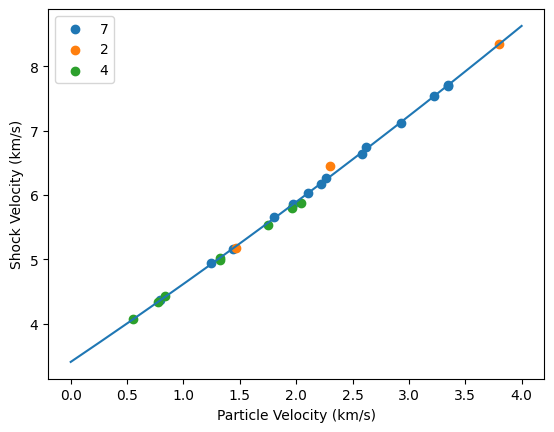
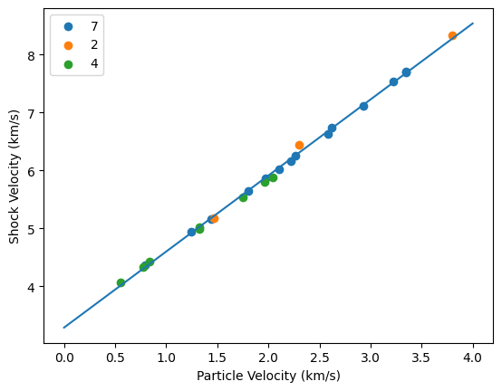

Fit Tantalum Hugoniot#
Needed to redo the impedance match solution for the Lyzenga et al. [1983] data.
(array([3.13282037e-05, 1.18088701e+00, 3.40464333e+03]), array([[ 1.08450186e-10, -4.57750187e-07, 4.00194273e-04],
[-4.57750187e-07, 2.02945196e-03, -1.88392158e+00],
[ 4.00194273e-04, -1.88392158e+00, 1.93956201e+03]]))
[3.13282037e-05 1.18088701e+00 3.40464333e+03]
<matplotlib.legend.Legend at 0x7fa8b11beba0>

(array([1.31311814e+00, 3.28903847e+03]), array([[ 1.31441527e-04, -2.62935631e-01],
[-2.62935631e-01, 6.24772442e+02]]))
[1.31311814e+00 3.28903847e+03]
[[ 1.31441527e-04 -2.62935631e-01]
[-2.62935631e-01 6.24772442e+02]]
<matplotlib.legend.Legend at 0x7fa8aef4e710>
